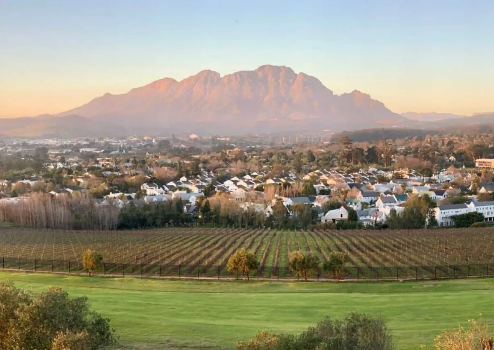

Cape Town
Where Mountains Meet the Sea
Where Mountains Meet the Sea
Cape Town is one of the world's most spectacularly beautiful cities, nestled between the iconic flat-topped Table Mountain and the sparkling waters of the Atlantic and Indian Oceans. Known as the "Mother City" of South Africa, it offers an extraordinary blend of natural beauty, vibrant culture, world-class cuisine, and diverse experiences. Take the Table Mountain Aerial Cableway or hike to the summit for panoramic views stretching across the Cape Peninsula. Stroll through the historic Bo-Kaap neighborhood with its brightly colored houses, explore the bustling V&A Waterfront, or visit Robben Island where Nelson Mandela was imprisoned. The Cape Winelands of Stellenbosch, Franschhoek, and Paarl are just a short drive away, offering tastings at centuries-old wine estates. Along the coast, encounter African penguins at Boulders Beach, drive the scenic Chapman's Peak, and stand at the dramatic Cape of Good Hope—the southwestern tip of Africa. Cape Town's restaurant scene rivals any global capital, its nightlife is electric, and its multicultural heritage creates a truly unique atmosphere that keeps visitors coming back.
One of the New7Wonders of Nature, this flat-topped mountain is the city's defining landmark. Hike up via Platteklip Gorge or take the rotating cable car for 360° views, sunsets, and unique fynbos vegetation found nowhere else on Earth.
Rolling vineyards, Cape Dutch architecture, and world-class wines in Stellenbosch, Franschhoek, and Paarl. Wine tastings, gourmet cuisine, and scenic drives through valleys surrounded by dramatic mountain ranges.
Home to a colony of over 3,000 endangered African penguins. Walk along boardwalks and observe these charming birds up close as they waddle across white sand beaches framed by giant granite boulders.
The dramatic southwestern tip of the African continent where the Atlantic and Indian Oceans meet. Rocky cliffs, swirling currents, diverse wildlife including baboons and ostriches, and the historic Cape Point lighthouse.
Explore the Mother City and surrounds
Discover the full Cape Peninsula: Table Mountain, Boulders Beach penguins, Cape Point, Chapman's Peak Drive, and the Cape of Good Hope. Includes scenic drives, vibrant markets, and world-class dining.

Indulge in curated wine tastings across Stellenbosch, Franschhoek, and Paarl. Enjoy gourmet meals paired with award-winning wines, explore charming towns, and visit historic Cape Dutch estates.

A comprehensive Cape Town holiday: Table Mountain, Peninsula drive, Winelands day trip, Robben Island, V&A Waterfront, and sunset at Signal Hill. Premium hotels with full itinerary.
Cape Town enjoys a Mediterranean climate with warm, dry summers and mild, wet winters. The city is a year-round destination, but the best time depends on your preferred activities.
Summer (November–March): Peak tourist season with hot, dry weather (25-30°C). Long days, outdoor festivals, beach weather, and vibrant energy. Book well in advance for December-January (peak holiday season). The famous south-easterly "Cape Doctor" wind blows most afternoons.
Shoulder Seasons (April–May & September–October): Excellent shoulder months with pleasant temperatures (18-24°C), fewer crowds, lower prices, and reliable weather. May and September offer great value with comfortable conditions.
Winter (June–August): The rainy season with occasional cold fronts and temperatures around 10-18°C. Mountain hiking is best in winter (clear visibility before clouds form). Whale watching begins off the coast. Fewer tourists mean lower rates, but some outdoor activities are weather-dependent.
From mountain peaks to ocean shores


Cape Town International Airport (CPT) is Africa's third-busiest airport with direct flights from Nairobi, Johannesburg, Dubai, London, Frankfurt, Amsterdam, and many other hubs. Kenya Airways and Ethiopian Airlines offer regular service from Nairobi.
The MyCiTi bus system covers key areas, but most visitors use Uber/Bolt (widely available and affordable), rental cars, or organized tours. Self-driving is easy with excellent roads. Left-hand traffic applies.
Most nationalities (US, UK, EU, Canadian, Australian) receive 90-day visa-free entry. Kenyan citizens can visit visa-free for up to 30 days. Passport must be valid 30 days beyond departure with blank pages.
Layers are key—even summer evenings can be cool near the mountain. Sunscreen and hat (UV is high), comfortable walking shoes for hikes, swimwear, and a light jacket. Winter visitors need warm layers and rain gear.
Absolutely. Cape Town is one of the world's great cities and easily justifies a 5-7 day visit on its own. Between Table Mountain, the entire Cape Peninsula, the Winelands, Robben Island, beaches, food, and culture, you'll struggle to fit everything in. Many visitors spend their entire South African holiday in Cape Town and feel richly rewarded. It's also an excellent base for day trips to surrounding areas and a natural extension to a Garden Route or safari itinerary.
Minimum 4 full days to cover highlights: Day 1—Table Mountain and city center, Day 2—Cape Peninsula (Boulders Beach, Cape Point, Cape of Good Hope), Day 3—Winelands day trip (Stellenbosch, Franschhoek), Day 4—Robben Island, V&A Waterfront, and cultural sites. For a more relaxed pace, 6-7 days allows you to explore at leisure, enjoy the beaches, nightlife, and additional activities like shark cage diving or paragliding.
Cape Town is generally safe for visitors following standard precautions. Tourist areas (V&A Waterfront, Camps Bay, City Bowl, popular beaches) are well-secured. Avoid walking alone at night in unfamiliar areas, don't display expensive valuables, use registered transport, and be aware of your surroundings. Our guides and recommended accommodations prioritize your safety.
Absolutely, and we highly recommend it. Kruger National Park and private reserves like Sabi Sands are just a 2.5-hour flight from Cape Town. The Garden Route offers a scenic alternative drive. A classic 10-14 day South Africa itinerary: 4-5 days Cape Town + 4-5 days safari + 2-3 days Garden Route. We create seamless multi-destination packages covering all transport and logistics.
Discover where mountains meet the sea in spectacular fashion.